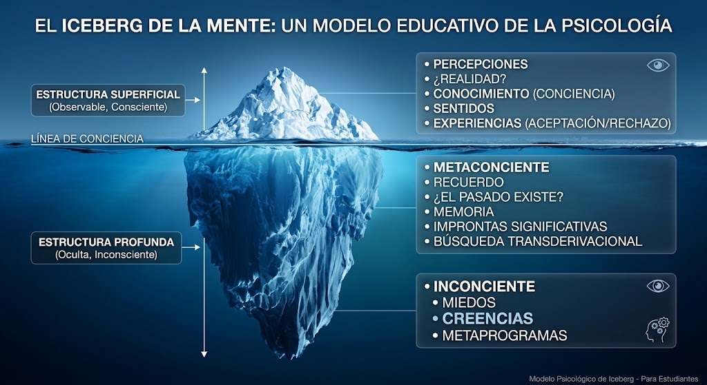
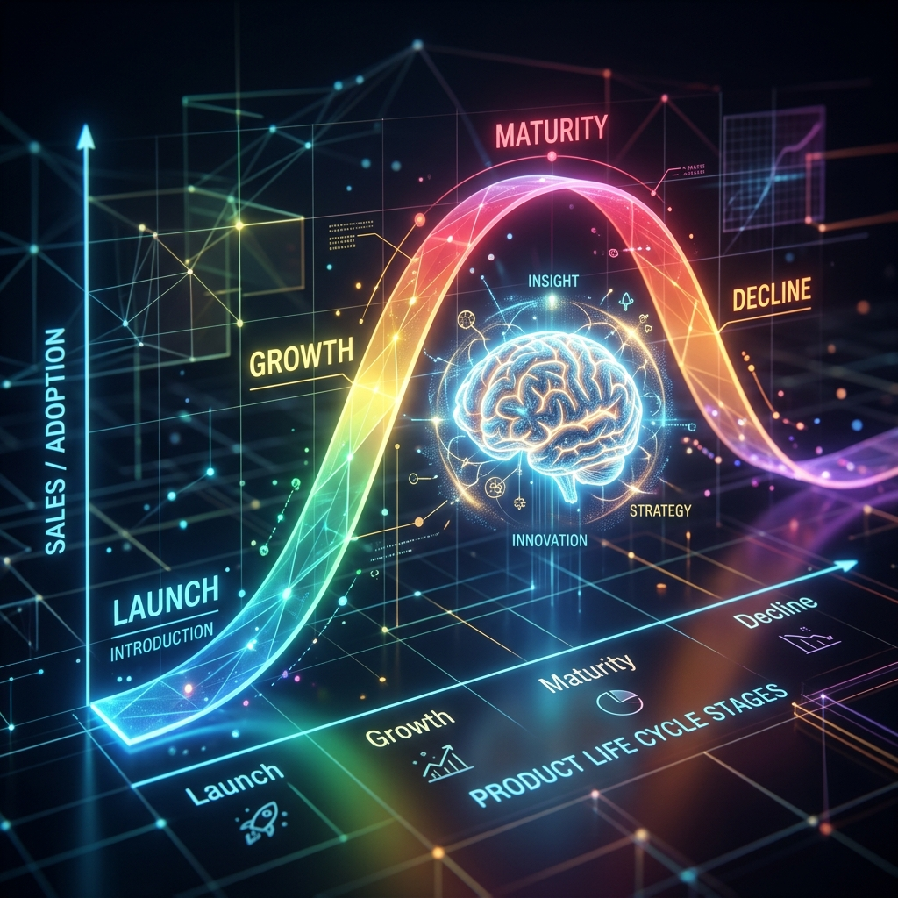
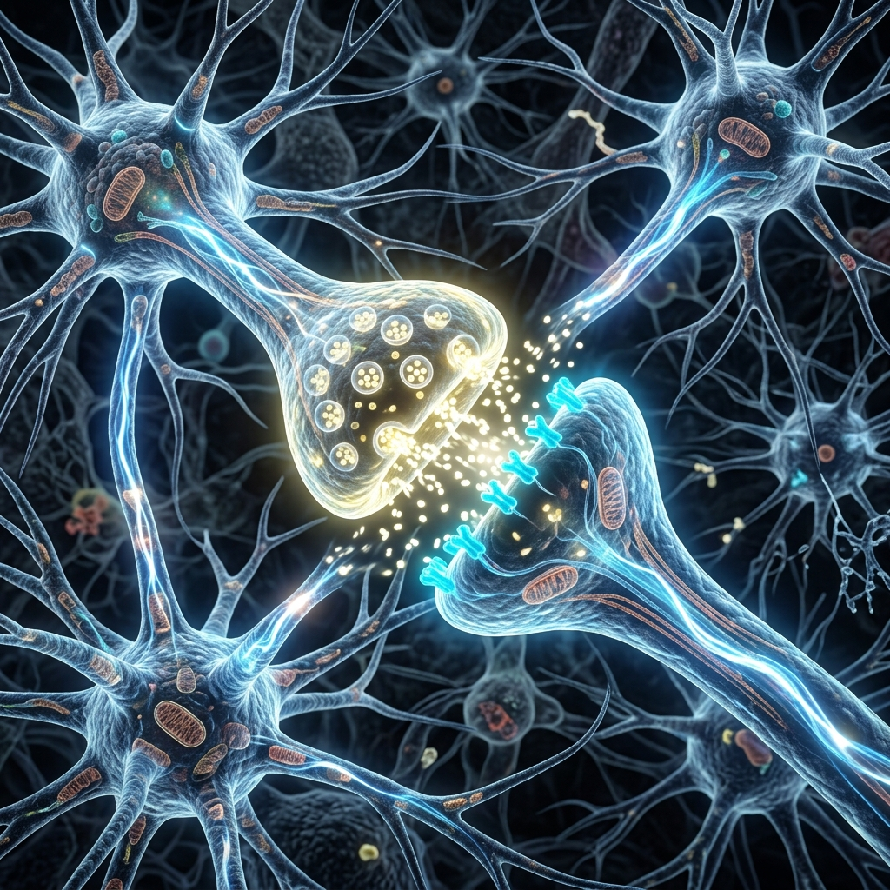
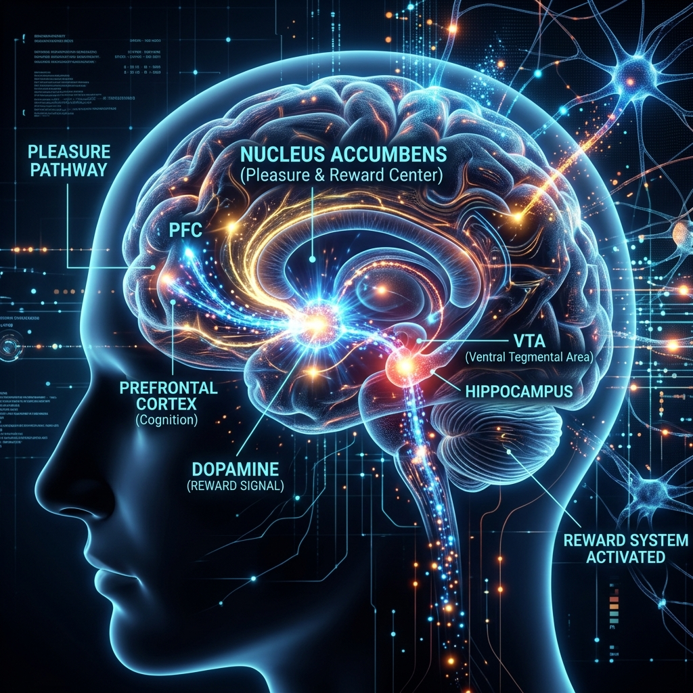
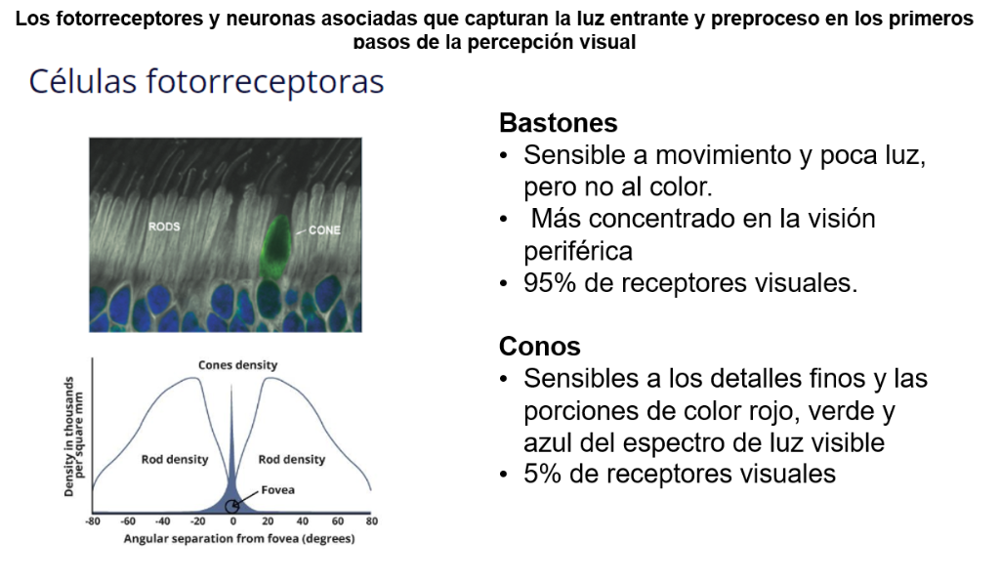
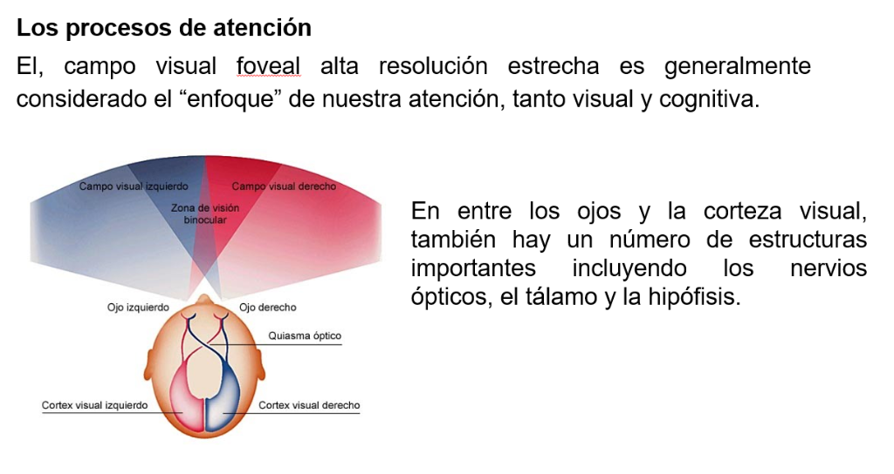
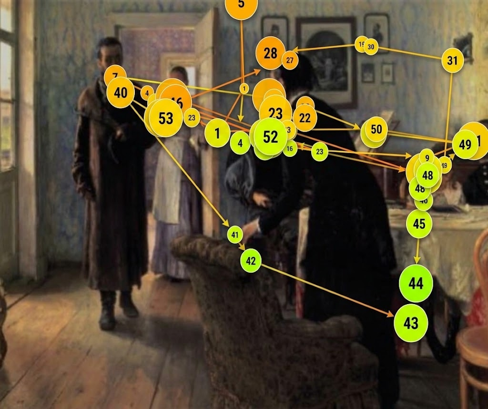
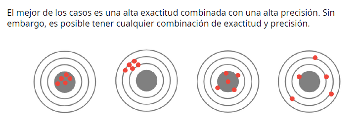
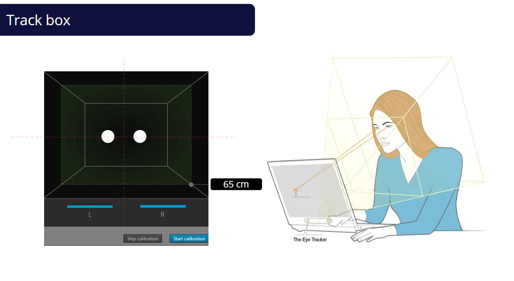
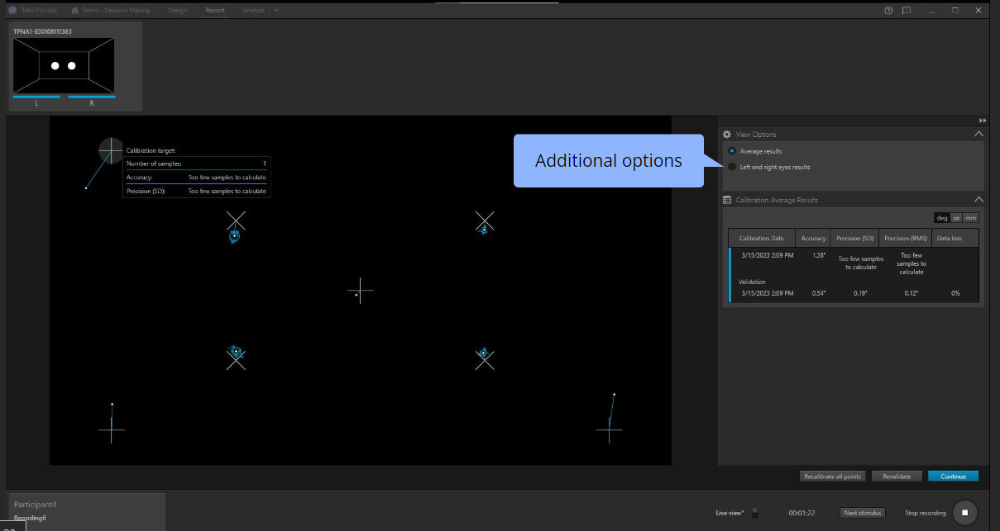

Por: Msc. Jorge Vasco
Material de lectura profunda basado en el libro: BASES CIENTÍFICAS DE NEUROMARKETING
El comportamiento humano es influenciado por una variedad de factores, incluyendo factores biológicos y genéticos, factores ambientales y culturales y experiencias de vida. Es importante tener en cuenta que estos factores interactúan entre sí para dar forma a nuestro comportamiento.
La mente humana es un fascinante universo lleno de pensamientos, emociones y recuerdos. A lo largo de la historia, los psicólogos han desarrollado diversas teorías para intentar comprender su funcionamiento. Una de las metáforas más utilizadas en psicología es la del iceberg, que nos ayuda a visualizar la profunda complejidad de la mente. En este artículo exploraremos la Teoría del Iceberg en Psicología, qué significa y cómo describe los diferentes niveles de conciencia y procesos mentales.
La Teoría del Iceberg en Psicología fue popularizada por Sigmund Freud, el padre del psicoanálisis. Freud sostenía que la mente humana está dividida en tres niveles de conciencia: consciente, preconsciente e inconsciente. Estos niveles se representan metafóricamente como un iceberg, donde solo una pequeña parte se encuentra visible sobre la superficie del agua, mientras que la mayor parte permanece oculta y sumergida en las profundidades.
En la metáfora del iceberg, la parte visible y superficial corresponde al nivel consciente de la mente. Aquí residen los pensamientos, sentimientos y sensaciones que somos capaces de percibir y de los cuales tenemos plena conciencia en un momento dado. Sin embargo, Freud argumentaba que esta parte es solo la punta del iceberg, y que debajo de la superficie se encuentra el vasto territorio del inconsciente.
El nivel preconsciente, según Freud, actúa como una capa intermedia entre el consciente y el inconsciente. En esta región de la mente residen los pensamientos y recuerdos que no están presentes en la conciencia inmediata, pero que pueden ser traídos a la mente con relativa facilidad si se activan adecuadamente. Por otro lado, el nivel inconsciente es la parte más grande y profunda del iceberg, donde se albergan los pensamientos, deseos y emociones reprimidas y ocultas.
En neuromarketing, los conceptos de conciencia y percepción son fundamentales para entender cómo los consumidores procesan información. La conciencia permite a las personas reflexionar sobre sus necesidades y deseos más profundos, lo que influye directamente en su toma de decisiones. Las emociones y percepciones juegan un papel importante en la evaluación de productos y en la formación de preferencias de marca. Las herramientas de neuromarketing, como el Eye Tracking o el EEG, permiten observar estos procesos tanto a nivel consciente como subconsciente, proporcionando una comprensión más profunda del comportamiento del consumidor.
Además, las bases biológicas del comportamiento, que incluyen los procesos neuronales y emocionales, están estrechamente ligadas a la adaptación del individuo a estímulos de marketing. La capacidad de los consumidores para ajustarse a nuevas informaciones o entornos está mediada por su percepción y conciencia, lo que también está influido por la naturaleza y el contexto cultural. Esto hace que el neuromarketing sea clave para predecir y analizar cómo los factores internos y externos pueden influir en la toma de decisiones.

El modelo gráfico de un iceberg para representar las capas ocultas es muy usado en diferentes ámbitos para explicar que no todo lo que se muestra al exterior es todo lo que se tiene o se es realmente. También es usado para explicar el éxito, ya que cuando alguien emprende un proyecto el único resultado de su esfuerzo y dedicación es lo que ven los demás en la parte visible de todo el conjunto.
En este caso mostraremos el modelo que propuso la gran Virginia Satir (1916-1988), influyente trabajadora social y psicoterapeuta estadounidense, especialmente conocida pues sus enfoques en terapia familiar.
Satir propuso su modelo de gran alcance, la metáfora del iceberg personal. El iceberg representa una visión mucho más profunda del ser humano que los meros sentimientos, pensamientos o conductas. Dividió el iceberg en varios niveles para poder trabajarlos de forma individual. El iceberg sirve para conseguir mover a una persona con conducta problemática, con dificultades de comunicación, baja autoestima o visiones del mundo negativas hacia una transformación a nivel de su yo personal y auténtico.
Sentir, moverse, hablar, reír o llorar son acciones propias y naturales en el ser humano que están relacionadas directamente con el sistema nervioso central y el cerebro. La neurociencia es el resultado de la convergencia de diversas disciplinas científicas como la anatomía, embriología, fisiología, bioquímica, farmacología, psicología y neurología. Esta amalgama permite una aproximación holística para comprender cómo el sistema nervioso central rige las conductas humanas y cómo estas interactúan con el entorno comercial, dando paso al neuromarketing.
El estudio del cerebro tiene raíces milenarias. Desde Alcmeón de Crotona en el siglo V a.C., quien propuso que el cerebro era el asiento del pensamiento y las sensaciones, pasando por los Tratados hipocráticos que defendían que emociones como alegrías, risas y penas proceden del cerebro, la humanidad ha estado fascinada por su propio órgano rector. Curiosamente, figuras como Aristóteles contradijeron esta idea, ubicando el intelecto en el corazón, y asumiendo que el cerebro servía para enfriar la sangre.
La historia avanzó con Galeno, quien relacionó los ventrículos cerebrales con el movimiento de fluidos a través de los nervios, y con René Descartes en el siglo XVII, quien aportó la teoría mecanicista y diferenció entre mente y cerebro, estableciendo la problemática mente-cuerpo que perdura hasta hoy.
El verdadero despegue de la neurociencia moderna se dio en el siglo XIX. Con la invención del microscopio y las técnicas de tinción celular, el científico español Santiago Ramón y Cajal formuló la doctrina neuronal. Utilizando la técnica de impregnación argéntica desarrollada por Camillo Golgi, Cajal demostró que el sistema nervioso está formado por células independientes (neuronas) que se conectan entre sí en lugares específicos (sinapsis), refutando la idea de una red continua ininterrumpida. Esto sentó las bases de la neuroanatomía moderna.
Simultáneamente, surgió el debate sobre la localización de las funciones cerebrales. Franz Joseph Gall propuso la frenología (pseudociencia de los relieves craneales), pero fue Pierre Paul Broca quien aportó pruebas concluyentes sobre la localización al descubrir que una lesión en una zona específica del hemisferio izquierdo (área de Broca) producía pérdida del lenguaje expresivo. Karl Wernicke añadió la noción del "procesamiento distribuido", indicando que diferentes aspectos de una función compleja son procesados en diversas áreas conectadas.
La neurociencia contemporánea aborda procesos sumamente complejos como la cognición, la cual es la capacidad de procesar la información a través de la percepción, experiencia y los rasgos subjetivos. Analiza el papel de la plasticidad sináptica (neuroplasticidad), que es la capacidad del cerebro para generar nuevas conexiones y regenerarse en respuesta a la experiencia, siendo la base fundamental del aprendizaje y la memoria. La neurociencia nos revela que el cerebro es capaz de adaptarse, y que comprender esta plasticidad es esencial para entender cómo el entorno (incluidos los estímulos de marketing) moldea nuestras preferencias y recuerdos.
La palabra marketing proviene del inglés "market" (mercado) y el sufijo "ing", denotando la acción continua de interactuar en el mercado. En su esencia, es la ciencia y el arte de explorar, crear y entregar valor para satisfacer las necesidades de un mercado objetivo con lucro. Aunque las prácticas de intercambio y persuasión son tan antiguas como la civilización misma (como el trueque o las antiguas "mingas"), el marketing como disciplina estructurada surgió tras la Segunda Guerra Mundial, en la década de 1950, cuando las industrias pasaron de vender lo que producían a producir lo que el cliente realmente necesitaba.
Con el paso de las décadas, las orientaciones empresariales han evolucionado sustancialmente. Al principio, la orientación a la producción dominaba (enfocada en eficiencia y bajos costos). Luego vino la orientación al producto (mejora de la calidad) y la orientación a las ventas (énfasis agresivo en liquidar inventario sin considerar la necesidad real). Hoy en día, predomina la orientación al marketing y al cliente, donde la empresa se estructura alrededor de entender, anticipar y satisfacer los deseos del consumidor de forma rentable, culminando en enfoques holísticos e incluso orientados al cerebro (neuromarketing).
El marketing tradicional u Outbound marketing se caracterizaba por su enfoque unidireccional y muchas veces interruptivo: comerciales de televisión, llamadas en frío, anuncios impresos no solicitados. Su objetivo era "comprar" la atención del cliente interrumpiendo lo que estaba haciendo. Aunque tuvo gran éxito, la saturación publicitaria generó rechazo.
Como respuesta surgió el Inbound marketing, una estrategia orientada a "ganarse" la atención del cliente mediante la creación de contenido de valor. Se basa en atraer a los usuarios de manera orgánica (SEO, blogs, podcasts, webinars) hacia la marca, educarlos y acompañarlos en su viaje de compra. Esto se apoya fuertemente en la creación del "Buyer Persona", una representación semificticia del cliente ideal que incorpora etnografía, perfil psicológico y hábitos de comportamiento, permitiendo una personalización sin precedentes.
El marketing mix tradicional, formulado como las 4P (Producto, Precio, Plaza, Promoción), dictaba las tácticas empresariales desde la perspectiva de la empresa. Con la revolución digital y el empoderamiento del consumidor, evolucionó hacia las 4C (Cliente, Costo, Conveniencia, Comunicación), poniendo el enfoque en el sacrificio real que hace el cliente para adquirir algo y en la comunicación bidireccional.
Actualmente, hablamos de las 4E, que reflejan un entendimiento más profundo y casi neurológico del consumo:

Como sostiene el adagio "nada dura para siempre", el mercado es un entorno en perpetuo cambio. Tanto las empresas como los productos experimentan un ciclo biológico compuesto por cuatro etapas bien definidas: Lanzamiento (Introducción), Crecimiento, Madurez y Declive.
En el Lanzamiento, el producto entra al mercado, la demanda suele ser baja y los costos de marketing (para educación y persuasión) son muy altos. En el Crecimiento, la aceptación del mercado aumenta, las ventas se disparan y empiezan a aparecer competidores que notan la rentabilidad. Durante la Madurez, las ventas alcanzan su pico máximo y se estabilizan; la competencia es feroz, y las estrategias se centran en la diferenciación, guerra de precios o lealtad emocional (marca paraguas). Finalmente, el Declive llega cuando los gustos cambian o la tecnología vuelve obsoleto al producto, lo que obliga a la empresa a retirarlo, reinventarlo o fusionarse.
El neuromarketing surge como respuesta a la insuficiencia de los métodos tradicionales de investigación de mercados (como las encuestas), en los cuales los consumidores a menudo no saben, no pueden o no quieren explicar por qué eligen un producto. El neuromarketing es la aplicación de tecnologías de la neurociencia (como el EEG o Electroencefalograma, el Eye Tracking o seguimiento ocular, y la Resonancia Magnética Funcional fMRI) para estudiar las respuestas cognitivas, afectivas y sensoriomotoras de los consumidores ante los estímulos de marketing.
El caso paradigmático que legitimó esta disciplina fue el Reto Pepsi vs. Coca-Cola. En pruebas a ciegas, más del 50% de los consumidores preferían el sabor de Pepsi, pero en el mercado real, Coca-Cola dominaba las ventas de forma aplastante. Un estudio utilizando resonancia magnética funcional reveló que, al probar a ciegas, ambas bebidas activaban el putamen ventral (asociado a la recompensa básica). Sin embargo, al conocer la marca (viendo el logo de Coca-Cola antes de probar), se activaban fuertemente la corteza prefrontal medial y el hipocampo, áreas relacionadas con la memoria, el autoconcepto y la emoción a largo plazo. La marca había reconfigurado la experiencia física del sabor en el cerebro, demostrando que la emoción generada por el branding sobrepasa la percepción sensorial pura.
Una gran preocupación social gira en torno a si el marketing actúa como el Flautista de Hamelin, manipulando a consumidores indefensos (especialmente niños) para que sigan ciegamente un deseo de consumo. Estudios recientes desmitifican esta idea absolutista. Investigaciones en psicología del consumidor muestran que los niños, alrededor de los siete años, desarrollan la capacidad cognitiva para filtrar mensajes y crear su propio "conjunto de consideración" basado no solo en la publicidad, sino en su entorno familiar, social y experiencias previas.
Sin embargo, el neuromarketing, al entender las vulnerabilidades de la percepción humana y los estímulos subliminales, plantea debates bioéticos profundos. Conocer los detonantes de neurotransmisores exige a los profesionales una responsabilidad inmensa: utilizar esta información para ofrecer verdadero valor y no para inducir decisiones financieras destructivas o promover adicciones perjudiciales. La neuroética es hoy una rama vital dentro de las neurociencias comerciales.
Durante décadas, la economía clásica se cimentó en la premisa del homo economicus, un actor puramente racional que analiza toda la información disponible para maximizar su utilidad y minimizar sus costos. La realidad cotidiana y la investigación científica demostraron lo contrario: el 90% de las decisiones de compra diarias se realizan de manera automática, subconsciente e irracional, bajo el gobierno de emociones, heurísticas (atajos mentales) y sesgos.
La neuroeconomía es el campo interdisciplinario que une neurociencia, economía conductual y psicología para explicar cómo el cerebro procesa decisiones de riesgo, recompensas y castigos. Uno de sus pilares es la Aversión a la Pérdida, conceptualizada por el premio Nobel Daniel Kahneman. Las personas experimentan el dolor de perder una cantidad de dinero con una intensidad psicológica aproximadamente dos veces mayor que la alegría de ganar esa misma cantidad. Por ello, las ofertas enmarcadas como "No te pierdas este descuento" suelen ser más efectivas que "Gana un ahorro", ya que activan mecanismos de alerta en el cerebro primitivo frente a un "peligro" económico inminente.
Nuestro sistema de toma de decisiones se divide en dos vías. La vía rápida (que involucra a la amígdala y el sistema límbico) procesa estímulos emocionales en milisegundos, tomando decisiones intuitivas que nos ahorran el inmenso gasto energético que supone el raciocinio complejo. La vía lenta (que viaja hacia el córtex prefrontal) es el pensamiento lógico, analítico y meditativo. Las marcas deben conquistar primero la vía rápida para siquiera ser consideradas por la vía lenta.
El poder irracional de la vía rápida se evidencia en el Experimento de los Chocolates de Dan Ariely. Al ofrecer a un grupo trufas Lindt a 15 centavos y chocolates genéricos a 1 centavo, la mayoría escogió la trufa por la percepción de gran valor. Al reducir el precio de ambos en 1 centavo (trufa a 14 centavos, genérico a 0 centavos / GRATIS), las proporciones se invirtieron drásticamente: la mayoría escogió el chocolate genérico gratis. Matemáticamente la diferencia de precio era la misma, pero la palabra "Gratis" activó el núcleo accumbens y eliminó la ansiedad por la pérdida, bloqueando el cálculo lógico del córtex prefrontal de que la trufa seguía siendo una excelente ganga.
La capacidad para posponer la gratificación inmediata en aras de un beneficio mayor futuro es crítica para la economía personal. El famoso experimento del Marshmallow (malvavisco) de Walter Mischel en los años 70 lo demostró. A niños de 4 años se les dio la opción de comerse un malvavisco de inmediato o esperar 15 minutos solos en una sala para recibir un segundo malvavisco. Solo un 30% logró esperar, mostrando un autocontrol excepcional.
Estudios longitudinales demostraron que los niños que esperaron tuvieron, décadas después, mejor salud, menores índices de adicciones, mayores ingresos y mejor éxito académico. La neurociencia descubrió después que esto está ligado a la actividad del córtex prefrontal y los niveles del neurotransmisor dopamina (regulados genéticamente por enzimas como la COMT). Los "niños de alta impulsividad" tienen cerebros que exigen dopamina inmediata, mientras que los "niños de alta voluntad" pueden gestionar la ansiedad, una revelación clave para entender el sobreendeudamiento, las compras por impulso y el fracaso de los planes de ahorro en la sociedad adulta.
La Teoría de Juegos, impulsada por matemáticos como John Nash, se encarga de analizar cómo los individuos toman decisiones cuando el resultado depende de las decisiones de otros. En neuroeconomía, el Juego del Ultimátum es fundamental. Un jugador recibe dinero y debe ofrecer un porcentaje a un segundo jugador. Si el segundo acepta, ambos se llevan el dinero; si rechaza, ninguno gana nada.
La economía clásica dictaría que el segundo jugador debería aceptar cualquier cantidad (incluso un 1%), ya que es mejor que nada. Sin embargo, los humanos tienden a rechazar ofertas injustas (menores al 20-30%) para "castigar" al ofertante avaro, prefiriendo perder dinero antes que soportar una inequidad. La resonancia magnética muestra que una oferta injusta activa la ínsula anterior (relacionada con el dolor y el asco moral), demostrando que nuestro cerebro valora la equidad social casi tanto como el dinero. Las marcas deben cuidar celosamente sus políticas de precios para no activar esta "insatisfacción moral".

El comportamiento de compra tiene un sustrato puramente biológico. El cerebro humano contiene alrededor de 86 mil a 100 mil millones de neuronas. Estas células no están conectadas físicamente entre sí como los ladrillos de un muro, sino que están separadas por un minúsculo espacio llamado espacio sináptico. La comunicación (sinapsis) se produce mediante impulsos eléctricos que recorren el axón y provocan la liberación de "llaves químicas", los neurotransmisores, que viajan por el espacio sináptico y se encajan en los receptores específicos de la neurona adyacente.
El cerebro es increíblemente maleable, fenómeno conocido como neuroplasticidad o plasticidad sináptica. Todo lo que experimentamos, compramos, repetimos y aprendemos altera físicamente estas redes. Como bien observaron los filósofos antiguos y la neurociencia moderna confirma: somos lo que repetimos (hábitos). Romper un hábito de compra o establecer lealtad a una nueva marca implica debilitar redes neuronales viejas y forjar, a través de la repetición y la recompensa constante, nuevas superautopistas neuronales.
El marketing y las experiencias de usuario actúan, en última instancia, como catalizadores para que el cerebro libere diferentes neurotransmisores, los cuales dictan cómo nos sentimos frente a una marca y modulan nuestra lealtad comercial:
A nivel de estructuras anatómicas, la Amígdala (parte del complejo amigdalino en el lóbulo temporal medial) es el centro de control del miedo, la ansiedad y el procesamiento emocional rápido. Es nuestra alarma de supervivencia. La publicidad de seguros, productos de seguridad o campañas de salud pública apelan directamente a ella para generar una respuesta de prevención inmediata, impulsando la toma de acción a través del miedo a una consecuencia negativa.
La Ínsula, por su parte, es fascinante y crítica para el neuromarketing: está implicada en el asco, la empatía y la anticipación del dolor. Los estudios demuestran que cuando vemos un precio que consideramos exageradamente alto para un producto, se activa la ínsula anterior de la misma manera que si sintiéramos un leve dolor físico (el famoso "dolor de pagar"). Reducir este dolor mediante tarjetas de crédito, opciones de cuotas sin intereses, membresías prepagas o justificando emocionalmente el precio con un alto valor percibido, es una táctica fundamental para cerrar ventas y evitar el abandono del carrito.

Si la amígdala es el pedal de freno basado en el miedo y la ínsula alerta del dolor de pagar, el Núcleo Accumbens (NAc) es el acelerador absoluto del consumo. Ubicado en el estriado ventral, en la parte basal del cerebro anterior, este núcleo es la pieza central del circuito de recompensa cerebral y la diana principal de las proyecciones dopaminérgicas provenientes del Área Tegmental Ventral (VTA) a través de la vía mesolímbica.
A nivel anatómico y funcional, el núcleo accumbens se divide en dos regiones principales: el core (núcleo central) y el shell (corteza o envoltura externa). El shell está intrínsecamente ligado a la percepción primaria del placer, el aprendizaje basado en recompensas y las emociones asociadas a los estímulos novedosos de marketing (por ejemplo, ver el anuncio de un smartphone revolucionario). El core, por su parte, se involucra en la traducción de esa emoción en una acción motora (el impulso físico de sacar la tarjeta de crédito o hacer clic en "comprar ahora"). Entender esta estructura dual permite a los neurocientíficos comprender cómo un deseo pasivo se convierte en un comportamiento activo de compra.
Uno de los descubrimientos más revolucionarios sobre el núcleo accumbens y su relación con la dopamina es la teoría del error de predicción de recompensa. La dopamina no solo se libera cuando obtenemos placer, sino que funciona como un sistema de aprendizaje basado en expectativas.
Si un consumidor espera que un producto tenga una calidad estándar y, al usarlo, la experiencia supera con creces sus expectativas (un error de predicción positivo), el núcleo accumbens recibe un pico masivo de dopamina. Este pico refuerza fuertemente la red neuronal, asegurando lealtad a la marca y repetición de compra. Por el contrario, si la campaña de marketing eleva demasiado las expectativas y el producto decepciona (un error de predicción negativo), los niveles de dopamina caen por debajo de la línea base, generando frustración, arrepentimiento ("buyer's remorse") y una memoria aversiva hacia la marca. Por tanto, en la toma de decisiones, el núcleo accumbens actúa como un sofisticado calculador probabilístico que constantemente evalúa "lo que espero" versus "lo que obtengo".
La decisión final de compra es el resultado de un "tira y afloja" neurológico. Estudios de resonancia magnética funcional (fMRI) de Knutson et al. demostraron que cuando a los sujetos se les muestra un producto que desean, el núcleo accumbens se activa fuertemente. Seguidamente, cuando se les muestra el precio, se activa la ínsula anterior (relacionada con la aversión y el dolor psicológico). Finalmente, la corteza prefrontal medial se enciende para sopesar ambos factores.
La compra se produce, casi inevitablemente, si la activación del accumbens (deseo/valor percibido) logra sobreponerse a las señales inhibitorias de la ínsula (dolor de pagar/precio). Las estrategias de neuromarketing más efectivas buscan desequilibrar esta balanza a favor de la marca: aumentando la hiperestimulación del accumbens mediante branding emocional, urgencia y escasez, o disminuyendo el impacto en la ínsula mediante opciones de financiamiento sin intereses, paquetes "todo incluido", o pagos invisibles (como tarjetas guardadas en apps, donde no hay intercambio físico de dinero).
En este intrincado proceso neurocomercial, el Tálamo actúa como la gran estación de relevo y enrutamiento del cerebro. Toda la información sensorial (vista del producto, sonido de la publicidad), a excepción del olfato que tiene vía directa al sistema límbico, pasa primero por el tálamo antes de ser enviada a la corteza cerebral (análisis consciente) y a la amígdala (análisis emocional rápido).
Por otro lado, el Giro Cingulado, un puente vital entre el sistema límbico emocional y la corteza prefrontal racional, se encarga del control ejecutivo y la regulación emocional frente al conflicto. Si la promesa publicitaria choca con la realidad del producto (activando el error de predicción negativo), el giro cingulado entra en estado de conflicto, generando la temida disonancia cognitiva y desilusión profunda. Las marcas deben gestionar con extrema ética y precisión las expectativas para mantener el giro cingulado en calma y el accumbens satisfecho.
Michael Gazzaniga, mediante sus estudios en pacientes con el cuerpo calloso seccionado, descubrió que el cerebro izquierdo contiene una función estructural denominada "El Intérprete". En el marketing, este hallazgo es monumental, ya que explica la constante racionalización de las decisiones de compra inconscientes.
Compramos impulsados por la emoción visceral y el disparo dopaminérgico del núcleo accumbens (procesos mayormente límbicos y subconscientes). Sin embargo, cuando debemos justificar esa compra, "El Intérprete" entra en acción y fabrica relatos coherentes y lógicos: "Compré este vehículo de lujo por la eficiencia de su motor y su valor de reventa", ignorando por completo el deseo primario de estatus. Las marcas exitosas saben que deben vender apelando a las emociones más primitivas, pero obligatoriamente deben proporcionar datos, cifras y argumentos lógicos para dotar al "Intérprete" de las herramientas necesarias para justificar la compra emocional y no sentir culpa ante sí mismo y la sociedad.
El núcleo accumbens también rige las decisiones del empleado, pieza fundamental para ejecutar la estrategia de marketing de cualquier empresa. Las recompensas extrínsecas o financieras (salario, bonos) activan fuertemente los circuitos dopaminérgicos y mejoran el desempeño a corto plazo, pero generan acostumbramiento rápido. Para asegurar un compromiso (engagement) real, las organizaciones deben apelar a las recompensas intrínsecas o no financieras (elogios sinceros, reconocimiento, empoderamiento). Estos incentivos activan circuitos complementarios de serotonina y oxitocina, influyendo directamente en que el empleado decida, de forma autónoma y sostenida, entregar su mejor esfuerzo por la marca.
"Los hombres deben saber que las alegrías, gozos, risas, diversiones, penas, agotamientos, angustias, lamentaciones proceden del cerebro y de ningún otro sitio..." - Hipócrates (Corpus Hipocraticum)
"En el futuro se podrán predecir el comportamiento y la experiencia de una persona a partir de su actividad cerebral." - John Dylan Haynes
"Sé atracción y no un micrófono de ruido." - Anónimo
"Los hombres deben saber que, desde el cerebro y solamente desde el cerebro, surgen nuestros placeres, alegría, risas y bromas; así como nuestras penas, dolores, penas y lágrimas." - Hipócrates (circa 400 A.C.)
"Antes de sanar a alguien pregúntale, si está dispuesto a renunciar aquello que le enferma." - Hipócrates
El término neuromarketing define la aplicación rigurosa de metodologías neurocientíficas de laboratorio orientadas a decodificar el comportamiento humano y el procesamiento afectivo-cognitivo subyacente a los intercambios de mercado. A nivel epistemológico, sus verdaderas raíces se consolidan en la década de los noventa con el neurocientífico Antonio Damasio y su teoría del marcador somático, la cual derribó el paradigma del homo economicus hiperracional al postular que el ser humano utiliza ineludiblemente la circuitería emocional del cerebro —especialmente el sistema límbico y la corteza prefrontal ventromedial— para la toma de decisiones, estimando que el 95% de las elecciones de compra se organizan en estratos subconscientes en un lapso crítico de apenas 2,5 segundos.
La "bienvenida" empírica a esta disciplina fue orquestada en 1999 por Gerald Zaltman en la Universidad de Harvard. No obstante, sus hallazgos operaron en penumbra hasta 2001, cuando el despliegue comercial de técnicas imagenológicas avanzadas como la Imagen por Resonancia Magnética Funcional (IRMf) y el Electroencefalograma (EEG) de alta densidad, permitieron a corporaciones como Coca-Cola, Home Depot y Delta Airlines auditar la caja negra del consumidor. Zaltman demostró empíricamente que se podía diagnosticar la respuesta hemodinámica y neuroeléctrica a estímulos de marketing en tiempo real, superando las enormes limitaciones de la investigación tradicional (sesgos declarativos, distorsión por racionalización post-hoc y disonancias del "Intérprete" del hemisferio izquierdo).
La consolidación del neuromarketing representa una fusión perfecta o coordination totems (como lo acuñó el profesor Victor Seidel de Oxford). Esta síntesis epistémica amalgama la robustez teórica de los precursores del marketing moderno, como Peter Drucker ("el marketing es la visión del negocio desde la perspectiva del cliente"), Theodore Levitt, Philip Kotler y David Aaker, con el rigor empírico y predictivo de la neurobiología y la neuroeconomía.
En este cruce de caminos destaca la figura del psicólogo y Premio Nobel (2002) Daniel Kahneman, cuyos postulados sobre la neuroeconomía, la aversión a la pérdida y el procesamiento dual (Sistema 1 implícito vs. Sistema 2 explícito) proporcionaron la argamasa teórica que permite hoy a los neurocientíficos y estrategas de mercado explicar cómo maduran nuestras decisiones. Esta fusión también integra hallazgos pioneros de John y Beatrice Lacey (neurocardiología), quienes demostraron que la vasta red neuronal intrínseca del corazón envía directrices al cerebro (memoria celular), validando que el consumidor "compra primero según su corazón y luego según su mente".
El conocimiento neurobiológico ha cristalizado en un Modelo Persuasivo de Neuromarketing altamente estructurado. Su axioma operativo es la seducción progresiva e imperceptible de los circuitos cerebrales del cliente (sincronizando olfato, vista, oído, gusto y tacto) hasta convertirlo en un "asociado" orgánico de la marca. El modelo opera en dos macrofases:
El ápice de este modelo es la identificación y calibración del "Punto S" o "interruptor de compra" (buy button). Desde el rigor neurobiológico, el Punto S es la homeostasis perfecta: el nivel ideal de incertidumbre, deseo y estrés moderado que favorece el pico máximo de activación dopaminérgica en el núcleo accumbens, sin llegar a hiperactivar las señales de aversión o dolor en la ínsula anterior.
Las metodologías de neuroimagen han arrojado evidencia irrefutable sobre cómo el cerebro, que a menudo parece conducir a acciones sin sentido lógico (similares a un "mono conduciendo un automóvil" en el mercado), obedece a un perfecto sentido evolutivo y emocional. Destacan los siguientes experimentos paradigmáticos:
En el ecosistema del neuromarketing moderno y la investigación biométrica del consumidor, el Eye Tracking (seguimiento o rastreo ocular) constituye una de las herramientas más determinantes y empíricas. Mientras que los métodos declarativos tradicionales (como encuestas o focus groups) recogen únicamente lo que el participante cree recordar o decide verbalizar —filtrado por sesgos sociales, racionalizaciones post-hoc del hemisferio izquierdo y fallas de memoria—, el Eye Tracking audita en tiempo real la conducta atencional preconsciente, capturando con exactitud milimétrica la trayectoria de la mirada ante cualquier estímulo comercial.
Axioma Neurobiológico de la Mirada: "No podemos desear, procesar ni comprar aquello que nuestros ojos no han atendido previamente". La visión representa la puerta de entrada sensorial primaria del cerebro del consumidor, concentrando más del 70% de los receptores sensoriales del cuerpo y reclutando más de un tercio del córtex cerebral para el procesamiento visual.
Para comprender rigurosamente el Eye Tracking a nivel de laboratorio, es indispensable dominar la arquitectura anatómica y neurofisiológica del sistema visual humano. El ojo no funciona como una cámara de video homogénea; por el contrario, presenta una asimetría funcional extrema entre su centro y su periferia, una compleja red de fotorreceptores, vías de transmisión subcorticales y respuestas pupilares autónomas.
Los fotorreceptores y neuronas asociadas de la retina son las estructuras biológicas que capturan la luz entrante y realizan el preproceso en los primeros pasos fundamentales de la percepción visual:

Figura 1.1: Células fotorreceptoras de la retina humana (densidad angular de conos en la fóvea vs. bastones periféricos).
El campo visual foveal de alta resolución estrecha es generalmente considerado el "enfoque" de nuestra atención, tanto visual como cognitiva. Fuera de este rango estrecho de 1° a 2°, la visión se degrada velozmente, obligando al sistema cognitivo a priorizar hacia dónde orientar la mirada.

Figura 1.2: Procesos de atención visual, campos binoculares y trayecto hacia la corteza visual.
El campo visual izquierdo y el campo visual derecho son captados por ambos globos oculares, formando en su intersección central la zona de visión binocular (esencial para la estereoscopía y la percepción de volumen de productos). Entre los ojos y la corteza visual primaria (córtex visual izquierdo y derecho), existe un conjunto de estructuras neuroanatómicas determinantes que modulan el procesamiento atencional: los nervios ópticos, el quiasma óptico (donde se cruzan las señales nasales hacia el hemisferio contralateral), el tálamo (estación de relevo sensorial a través de los núcleos geniculados laterales) y la hipófisis (que articula respuestas neuroendocrinas ante estímulos de alto impacto).
La dilatación de la pupila, por su parte, es la respuesta de esta parte del ojo a un estímulo. Un músculo situado en el iris se encarga de dilatar la pupila de acuerdo a la orden del sistema nervioso simpático. Las pupilas pueden dilatarse cuando la luz es escasa, ante una situación de estrés o por acción de una droga. Cuando una pupila se dilata (es decir, aumenta su diámetro), se habla de midriasis.
En la investigación con Eye Tracking, el registro continuo del diámetro pupilar permite medir la respuesta psicofisiológica involuntaria del consumidor. Una vez controlada la luminancia ambiental mediante protocolos de calibración, la midriasis revela el nivel de activación del sistema nervioso simpático: a mayor sorpresa, esfuerzo cognitivo o impacto emocional ante un empaque, comercial o interfaz digital, mayor es la dilatación pupilar registrada.
Dado que la fóvea de máxima resolución cubre únicamente entre 1° y 2° del arco visual y el foco atencional es sumamente concentrado, el cerebro debe desplazar continuamente los ojos a través del estímulo comercial mediante un repertorio coordinado de movimientos oculares:
Estados en los que el globo ocular permanece relativamente estático sobre un área del estímulo durante un lapso que oscila entre 150 y 400 milisegundos. Es durante la fijación cuando la luz estimula la fóvea y la información viaja a través del nervio óptico y el tálamo hacia la corteza visual primaria (V1-V4) y la corteza inferotemporal para la decodificación semántica y cognitiva.
Saltos balísticos ultrarrápidos (duración entre 20 y 50 ms, con velocidades que pueden superar los 500° a 900° por segundo) que conectan una fijación con la siguiente. Durante la sacada ocurre el fenómeno de supresión sacádica (saccadic suppression): el cerebro "apaga" transitoriamente el procesamiento de la imagen para impedir que experimentemos un barrido visual borroso.
Incluso cuando fijamos la vista con máxima concentración, los ojos nunca están completamente quietos. Ejecutan tres micromovimientos constantes: microsacadas, deriva lenta (drift) y temblor fisiológico ocular (tremor). Son vitales: si el ojo estuviera 100% inmóvil, los fotorreceptores se saturarían y el estímulo se desvanecería en 2 segundos por habituación neural (Efecto Troxler).
Movimiento continuo donde los ojos igualan la velocidad angular de un estímulo en movimiento sin necesidad de sacadas intermedias. Es el mecanismo biológico que evalúa comerciales de televisión, trailers de cine, videos en redes sociales y elementos cinéticos en interfaces de usuario y e-commerce interactivo.
La tecnología dominante en los laboratorios de neuromarketing (como Neurolab) es la técnica óptica PCCR (Pupil Center Corneal Reflection) o Reflexión Corneal del Centro de la Pupila. Este principio físico garantiza un registro no invasivo, exacto y de alta velocidad:
Diodos LED emiten luz infrarroja cercana invisible (850-940 nm), inocua para el ojo y sin alterar el diámetro pupilar natural.
La curvatura exterior de la córnea refleja la luz infrarroja generando un punto de brillo microscópico estable (glint).
Sensores CMOS infrarrojos capturan imágenes de alta velocidad (60 Hz a 120 Hz) del ojo y sus coordenadas anatómicas.
Algoritmos biométricos calculan el vector trigonométrico entre el centro geométrico de la pupila y el glint corneal.
El software proyecta en tiempo real las coordenadas (X, Y) exactas del punto de mirada sobre el estímulo analizado.
El Protocolo de Calibración Biométrica: Antes de iniciar cualquier prueba experimental, cada participante debe pasar por un proceso de calibración de 5 a 9 puntos. En él, la persona sigue con la vista una diana visual que recorre la pantalla. Este procedimiento ajusta el modelo biométrico del software a la forma geométrica específica del globo ocular del sujeto, la distancia interocular y la distancia respecto a la pantalla. Se valida que la precisión angular sea inferior a 0.5° de arco visual y que la exactitud/dispersión sea estadísticamente sólida.
| Tipología de Hardware | Frecuencia de Muestreo | Entorno de Aplicación | Ventajas Principales en Neuromarketing |
|---|---|---|---|
| Estacionario / De Pantalla (Screen-Based) Ej. Tobii Pro Spectrum, Fusion, Gazepoint |
60 Hz – 120 Hz | Pantallas de ordenador, laptops, tablets, interfaces web y anuncios en video. | Máxima precisión geométrica, pupilometría de alta resolución temporal, ideal para UX/UI, e-commerce y piezas publicitarias 2D. |
| Gafas Portátiles (Wearable Glasses) Ej. Tobii Pro Glasses 3, Pupil Invisible |
50 Hz – 100 Hz | Shopper marketing en supermercados, vitrinas comerciales, retail físico, conducción y ergonomía. | Total libertad de movimiento corporal, análisis de interacción con packaging tridimensional real en góndolas y planogramas físicos. |
| Realidad Virtual / Aumentada (VR/XR Trackers) Ej. HTC Vive Pro Eye, Meta Quest Pro, Vision Pro |
90 Hz – 120 Hz | Supermercados virtuales inmersivos, diseño arquitectónico de tiendas y simulación 3D. | Control experimental absoluto de variables ambientales (iluminación, orden de estantería, rotación espacial del empaque) a menor coste logístico. |
En el laboratorio de neuromarketing, los registros oculares se traducen en indicadores cuantitativos objetivos que permiten evaluar la eficacia de cada elemento del diseño comercial:
Tiempo hasta la Primera Fijación (ms) — Significado: Enganche. Intervalo transcurrido desde que el estímulo aparece en pantalla hasta que los ojos del participante se posan por primera vez dentro de un Área de Interés (AOI). Mide la capacidad de enganche y atracción visual inmediata (atención bottom-up). Un TTFF muy bajo indica que el elemento logra un rápido enganche frente a los estímulos competidores.
Número de Visitas al AOI — Significado: Reconocimiento. Cuantifica cuántas veces distintas la mirada del consumidor ingresa a un Área de Interés específica. Refleja el reconocimiento de marca, notoriedad y recuerdo del elemento en la mente del usuario, demostrando que el diseño es identificado y recuperado activamente durante la exploración visual.
Tiempo Total de Fijación — Significado: Métricas de Impacto Visual. Suma acumulada de la duración de todas las fijaciones realizadas dentro de un AOI a lo largo de la exposición. Es el indicador directo del impacto visual e interés cognitivo sostenido, cuantificando la potencia con la que un diseño o mensaje retiene la atención del consumidor.
La data masiva recolectada por el eye tracker se sintetiza visualmente mediante herramientas gráficas estandarizadas en la neurociencia del consumidor:
El análisis con Eye Tracking en miles de pruebas experimentales ha demostrado que el cerebro del consumidor opera bajo patrones visuales automáticos y sesgos preconscientes modulados por el Sistema 1 (Kahneman):
En páginas web, blogs y catálogos de e-commerce densos en texto, los usuarios escanean de forma horizontal la parte superior (barra superior de la F), descienden un tramo para hacer una segunda lectura horizontal más corta, y finalmente realizan un barrido vertical por el margen izquierdo, ignorando por completo el cuadrante inferior derecho.
En anuncios equilibrados con imágenes y titulares amplios, la mirada fluye desde la zona superior izquierda (punto de entrada visual primario) en zigzag horizontal hacia la derecha, cruza diagonalmente hacia la esquina inferior izquierda y remata en la esquina inferior derecha, donde debe ubicarse el Call to Action (CTA).
Los seres humanos seguimos automáticamente la dirección de la mirada de otros rostros (atención conjunta). En un anuncio donde el modelo mira de frente a la cámara, el 80% de la atención se queda atrapada en los ojos del modelo. Si el modelo gira su mirada hacia el producto o el titular, la mirada del consumidor es redirigida inmediatamente hacia el producto, multiplicando el recuerdo de marca.
El cerebro aprende a predecir la ubicación típica de los anuncios display invasivos e inhibe activamente las fijaciones oculares sobre esas coordenadas. Si un botón clave o información crucial se diseña con aspecto de anuncio o se sitúa en márgenes periféricos, será ignorado por el 90% de los usuarios.
Principio Clave de Yarbus: "No vemos con los ojos — vemos con la mente guiando los ojos". Los movimientos oculares no son respuestas mecánicas pasivas; cada salto de la mirada está activamente gobernado y modulado por los objetivos cognitivos del observador.
En la historia de la neurociencia visual y el neuromarketing, la figura del neurocientífico soviético Alfred L. Yarbus (1914–1986) representa un punto de inflexión monumental. Con la publicación de su obra cumbre Eye Movements and Vision (1967), Yarbus demostró que la percepción visual no es una cámara que registra pasivamente una escena, sino un sistema activo, dinámico y profundamente unificado que integra tres pilares inseparables:
La navegación continua del ojo por el entorno mediante movimientos sacádicos, desplazando la diminuta fóvea hacia las zonas de mayor interés visual y comercial.
La actividad ocular en reposo aparente. Lejos de ser un estado estático, durante cada fijación el ojo realiza micromovimientos incesantes indispensables para procesar la información.
La modulación mental y estratégica de la mirada. Las intenciones, dudas, recuerdos y metas del consumidor son las que deciden qué se mira y qué se ignora.
Yarbus planteó una idea revolucionaria que hoy fundamenta todo el Eye Tracking contemporáneo: estos tres procesos forman un continuo oculomotor único e indivisible.
Para investigar si el ojo necesita moverse obligatoriamente para ver, Yarbus diseñó un experimento genial pero extremo en su laboratorio: colocó una pequeña ventosa de succión fijada directamente al globo ocular de voluntarios humanos, a la cual adosó un microespejo óptico con una lente diminuta. Este dispositivo proyectaba una imagen que se movía en exacta sincronía con el ojo, cancelando por completo cualquier movimiento relativo entre la imagen y la retina (lo que se conoce como imagen estabilizada en la retina).
Yarbus elimina el movimiento relativo ojo-imagen usando la ventosa corneal.
Los fotorreceptores de la retina dejan de responder ante señales lumínicas invariables.
¡La imagen desaparece por completo en pocos segundos! El sujeto ve un campo gris o negro.
Al permitir un micro-movimiento o parpadeo, la imagen reaparece al instante.
Este experimento demostró una ley biológica crucial: Ver es detectar cambios. El cerebro humano no está diseñado para ver imágenes fijas o uniformes; las neuronas visuales cesan su actividad ante estímulos que no cambian (fenómeno de adaptación neural). Por eso, en neuromarketing, un anuncio gráfico monótono, un empaque plano o un banner digital estático sufren ceguera atencional: el cerebro del consumidor los "apaga" de forma automática.
Aunque cuando miramos la etiqueta de un producto sentimos que nuestros ojos están perfectamente quietos, la realidad fisiológica es completamente opuesta: el ojo humano nunca se detiene. Durante los 200 a 400 milisegundos que dura una supuesta "fijación", el sistema oculomotor ejecuta constantemente tres tipos de micromovimientos:
El Efecto Troxler en la Vida Cotidiana: Si fijas la mirada en un punto central de una imagen sin mover los ojos, los objetos de tu visión periférica se van desvaneciendo hasta desaparecer (Efecto Troxler). Las microsacadas son las encargadas biológicas de "rescatar" la visión del consumidor, asegurando que los detalles del empaque o el botón de compra no se borren de la percepción consciente.
El experimento más célebre de Alfred Yarbus consistió en mostrar a distintos sujetos una famosa pintura realista del artista ruso Ilya Repin, titulada «El visitante inesperado» (que retrata a un exiliado político que regresa sorpresivamente a su hogar ante la mirada atónita de su madre, esposa, hijos y criada). Yarbus registró con su equipo los movimientos oculares (scanpaths) de los participantes frente a exactamente la misma pintura, demostrando que la trayectoria de la mirada cambia radicalmente según la instrucción previa (el objetivo mental del observador):
Lienzo original: «El visitante inesperado» (Ilya Repin, 1884)

Registro de Eye Tracking (Gaze Plot de Yarbus con fijaciones numeradas)
La mirada escaneó verticalmente los trajes, el abrigo gastado del visitante y los vestidos de las mujeres (fijaciones 41 a 45), ignorando casi por completo el entorno físico de la habitación.
Los ojos saltaron casi exclusivamente de rostro en rostro (fijaciones 7, 40, 53, 28, 23, 52, 48, 49), examinando las arrugas de la anciana madre, las facciones del visitante y los rasgos de los niños.
Fundamento Clave: "La calibración permite conseguir la mayor exactitud y precisión de los puntos de mirada. Un participante que esté calibrado correctamente en su rastreador ocular proporcionará datos de mirada de mayor calidad científica."
Dentro del software de Eye Tracking (como Tobii Pro Lab o Tobii Pro Eye Tracker Manager), la calibración no es un simple paso técnico preliminar, sino el proceso algorítmico mediante el cual se construye un modelo tridimensional personalizado del ojo humano (3D Eye Model). Este modelo estima la distancia anatómica entre la córnea y la fóvea, el diámetro ocular y la curvatura de la córnea de cada participante para proyectar con exactitud matemática el vector de mirada (gaze vector) sobre el estímulo comercial analizado.
En la captura biométrica de datos visuales, los dos criterios cardinales de calidad metodológica son la exactitud y la precisión:
Definición: Es la diferencia media entre la posición real de la mirada del sujeto y la posición que el rastreador ocular registró.
Definición: Capacidad del rastreador ocular para reproducir de forma fiable y consistente la misma medición del punto de mirada de una muestra a otra.

Figura 7.1: Combinaciones posibles de exactitud y precisión (el caso óptimo combina alta exactitud y alta precisión).
Antes de iniciar la calibración, el operador interactúa con la interfaz del software para asegurar las condiciones geométricas del experimento:

Figura 7.2: Caja de seguimiento (Track Box) y distancia estándar de 65 cm.

Figura 7.3: Validación y vectores de error en la interfaz de Tobii Pro Lab.